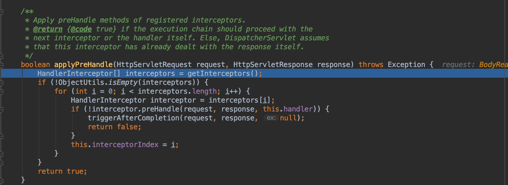
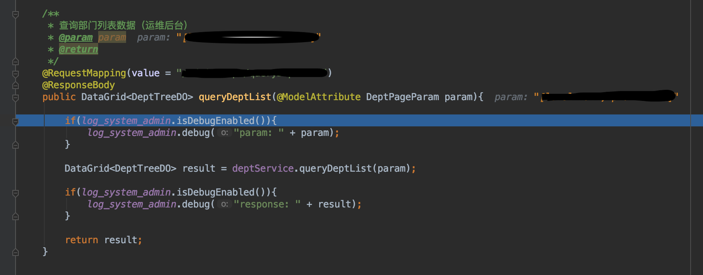

Spring MVC 一次请求完整过程
一次请求的完整顺序：
Filter -> DispatcherServlet -> MapperHandler -> getHandlerMethod -> getHandlerAdapter -> Interceptor.preHandle -> handlerAdapter.handle -> HandlerMethod.invoke -> Interceptor.postHandle -> Interceptor.afterCompletion -> filter





